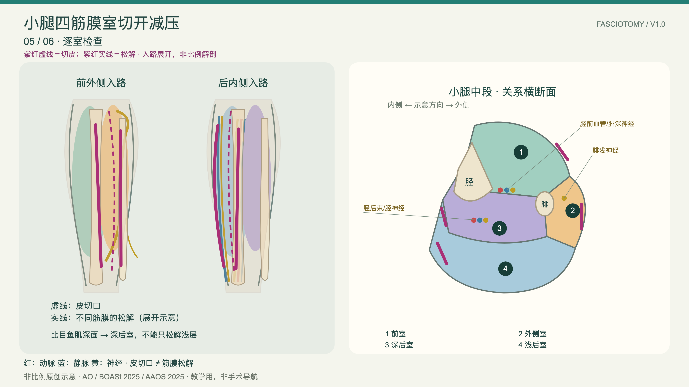
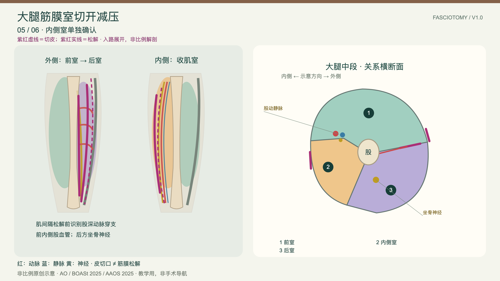
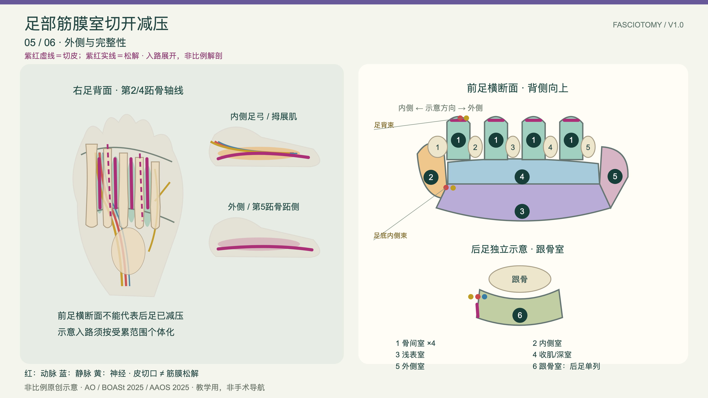

FASCIOTOMY / LAYERED TEACHING
下肢骨筋膜室
切开减压教学图谱
Lower-limb fasciotomy · layered procedural atlas
三个部位分别制作：小腿为主演示，大腿与足部独立成页。每页包含分步入路、横断面、神经血管风险、参数及解释；中英双语、离线使用、4K PNG 与 SVG 导出。
Three standalone bilingual HTML modules with layered schematics, cross-sections, neurovascular warnings, source-linked parameters and 4K/vector export.


足部管理尚无统一共识，示意图不能视为所有足部损伤的固定手术处方。
Foot compartment syndrome management lacks consensus; these drawings are not a universal operative prescription.
Foot compartment syndrome management lacks consensus; these drawings are not a universal operative prescription.